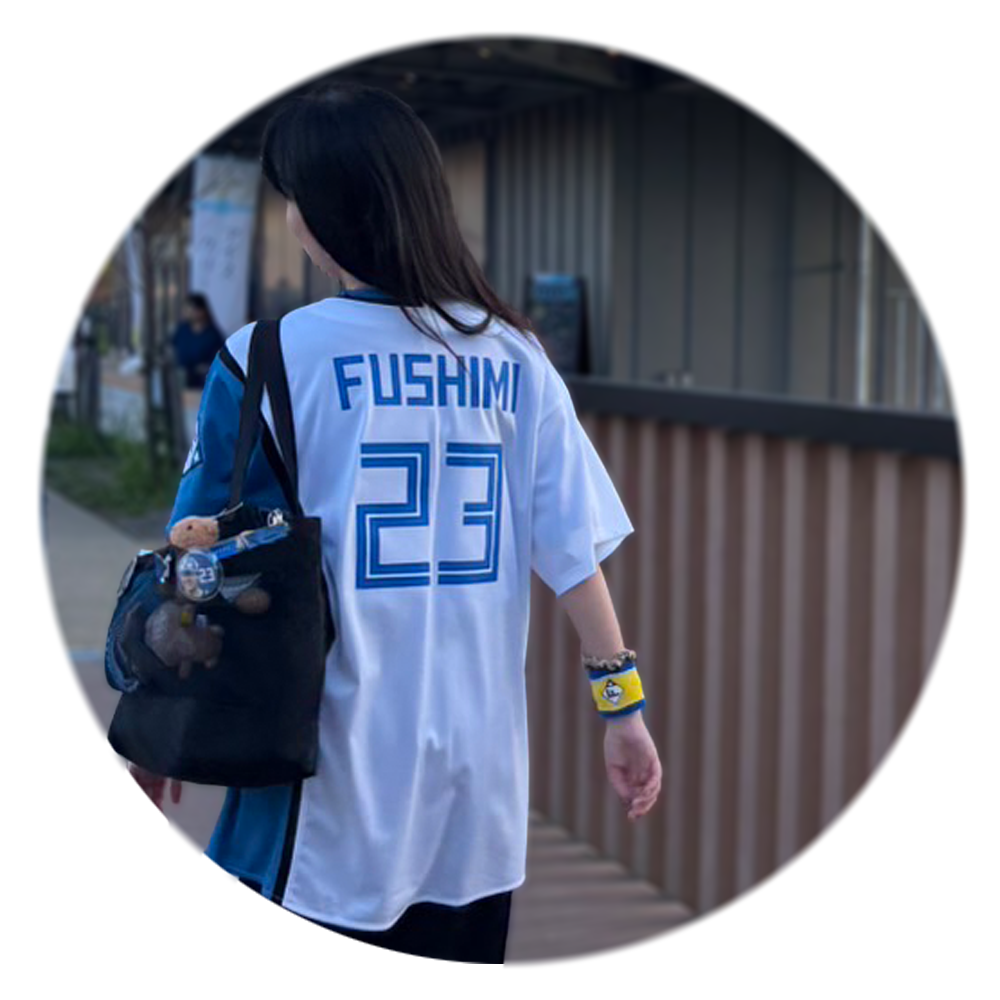
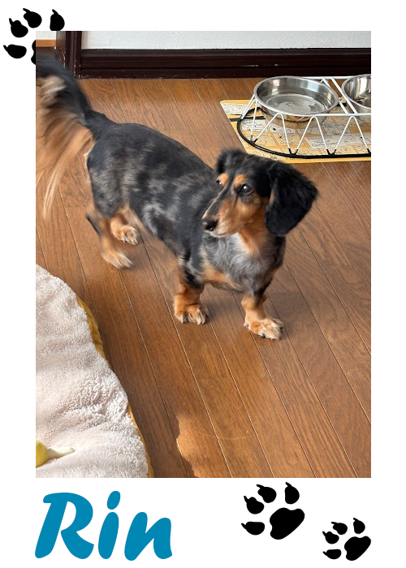
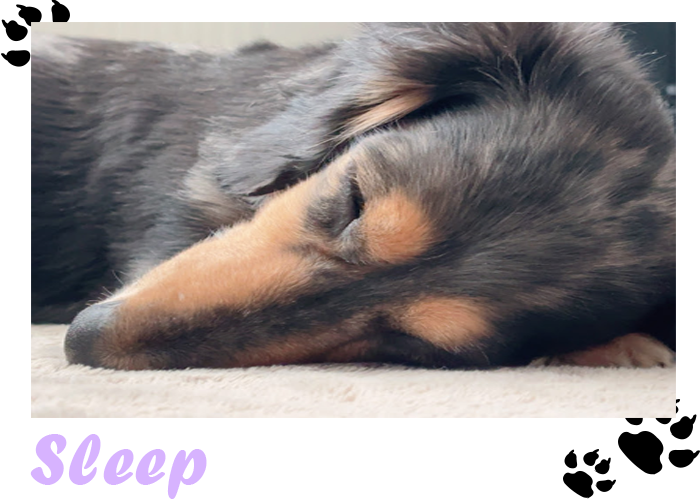
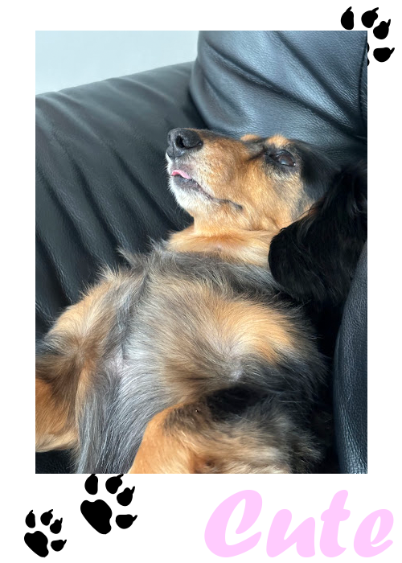
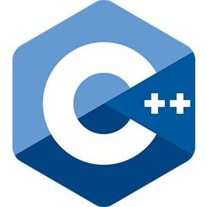
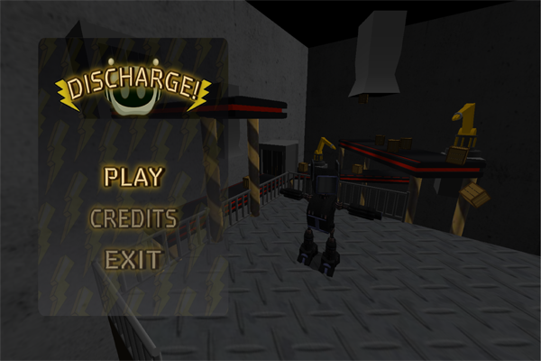
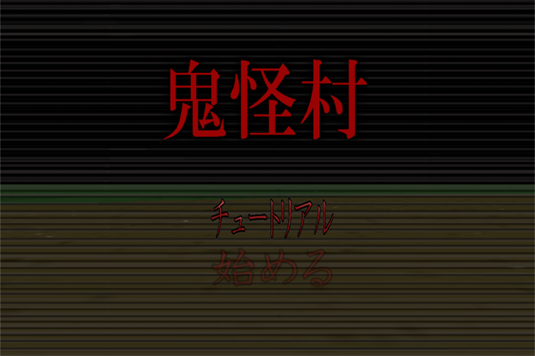
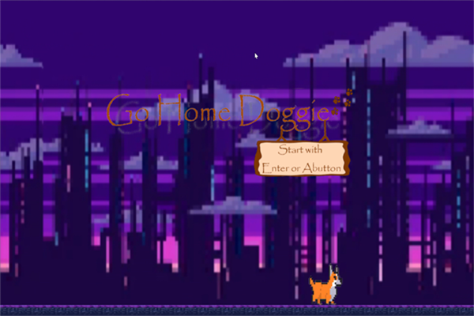
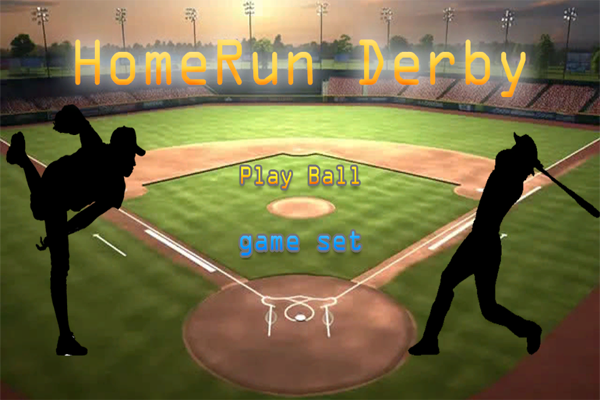

Welcome To My Portfolio
About Me

Marina Harada
プロフィール
氏名：原田万里奈
学校名：専門学校北海道サイバークリエイターズ大学校
趣味：
スポーツ観戦(主に野球観戦)カラオケ
気分転換やアイディアを求めて1人で出掛けること
犬を飼っていて、実家に帰るとずっと甘えてきてくれます。
そのお陰で気分転換やアイディア整理にもなっています。
ゲーム制作経験：
個人制作7作品チーム制作3作品



Skills
-
90%
C言語
-

90%C++
-
70%
Unity
-
70%
Unreal Engine
-
90%
Photoshop
-
70%
git
WORKS

後期C++作品
2年生後期にC++を使用したゲーム作品です。

前期C++作品
2年生前期にC++を使用したゲーム作品です。

C++チーム
C++を使用したチーム制作作品です。
自分はサウンドとシフトマネージャを担当しました。

C言語チーム
初めてのチーム制作作品です。
自分はタイマーの部分と少しのプログラムを担当しました。

C言語2Dアクション
C言語を使用した2Dアクションゲーム作品です。

Unity
Unityで初めて自分で一から考え、制作した作品です。
後期C++作品
スタート・ゴール・範囲を設定し、ゲームを開始する度にランダムでステージが生成される
再帰バックトラック法を用いたランダムステージ生成を実装
開始ごとに異なる探索体験を実現
--使用技術--
- C++
- DirectX9
- 再帰バックトラック法
- AABB当たり判定
前期C++作品
ベクトルで距離を取り、複雑な式を使わずに一定の速度を優先し、プレイヤーが直感的に操作できるよう制作
足場を作って進んでいくのは簡単になってしまうので、棘を設置したり消せるブロックを設置してステージ難易度を調整
消せるブロックの仕組みとしてはbool型で使用しているかを管理し、プレイヤーとブロックの極が一致していればfalse、一致していなければ何もせずtrueのままで表示という風に制作
--使用技術--
- C++
- DirectX9
- ベクトル
- bool型による磁極管理
C++チーム作品
サウンドとタイムマネージャーを担当
根本的なプログラムにはあまり携わっていませんが、サウンド探しや各SEを指定された場所に入れ込む際に行動と音が合うようにコードを工夫し、行動が終わり次第違和感の無いように制作
--使用技術--
- C++
- DirectX9
- チームリーダー制作エディタ
C言語作品
タイマー全てとアイテムモデルに関してのプログラムを少し担当
当初は2人プレイの実装を目指していましたが、開発過程でカメラを2つ同時に描画する機能を実装
プレイヤー視点と敵視点をそれぞれ表示することで、双方の状況を可視化し、より戦略的なゲーム体験を実現
--使用技術--
- C言語
- DirectX9
- カメラ処理
- 球による当たり判定
C言語2Dアクション作品
プレイヤーの移動を自動化し操作をジャンプのみの簡易操作で制作
自動化により強制スクロールとなるため難易度がちょうどよくなる
--使用技術--
- C++
- DirectX9
Unity作品
野球が好きなのでホームランダービー風のゲームを制作
ボールとバットが接触する瞬間の当たり判定や、打球の飛距離を計測する処理の実装に苦戦しました。
そこで既存の実装方法を調査するだけでなく、自身でも処理の流れを整理しながら複数の方法を検証し、試行錯誤を重ねることで実装を完成させました。
--使用技術--
- C＃
- Unity
Tech Notes
バックトラック法
後期C++制作の際に使用した技術です
マップのランダム生成として使用しました。
ゲームステージにおいてランダム生成は必要不可欠だったのですが
ランダム生成にも多くの種類があり、その中でも再帰バックトラック法が実装しやすく制作するゲームにも合っていたので、
今回この方法を採用しました。
AABB当たり判定
同作品ではAABB当たり判定も実装しました。
今まで使用していた当たり判定がステージを傾けた際に当たり判定が傾ける前の位置に取り残され、ボールがすり抜ける事が多々発生したので今回の制作と相性が悪いと思い、
今回、初めてAABB当たり判定を使用したところボールがすり抜ける事がなく上手くいったので使用しました。
フォグ・演出設計
また、記憶をモチーフに「思い出していく感覚」を空間演出とする為にフォグ演出も取り入れました。
ただし、フォグで曖昧化された視界のみだと限界はある為、他にもゲーム画面に遷移後本棚が上から降らせる、床を揺らがせる事によって記憶を辿る過程を象徴させ、
プレイヤーは空間そのものに翻弄される構造にしました。
Contact
ポートフォリオをご覧頂きありがとうございます。
ご連絡は下記のメールアドレスにてお願い致します。